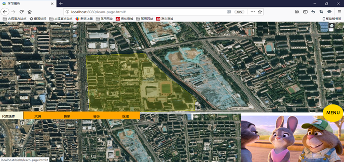

系统流程
该学习系统流程主要分为两部分：学习流程以及测试流程。进行功能选择后，还需进行范围选择。接着，您就可以开始您的学习or测试了！
系统模块
该系统主要分为两个模块：学习模块以及测试模块，下面将会就这两个模块分别进行详细介绍：
学习模块
学习模块主要提供以下四个尺度的学习，学习过程中，会高亮显示相应地区的轮廓，并且显示有关相应地区的文字、图片、视频等信息。
地球的七个大洲，包括亚洲、欧洲、非洲、北美洲、南美洲、大洋洲、南极洲。
主要为世界上较发达的国家，包括中国、美国、日本、英国、法国、德国、俄罗斯等。
中国的34个省级行政区，包括北京市、天津市、陕西省、河北省、湖北省等。
测试模块
测试范围与学习范围的选择相同，包括大洲、国家、省份以及区域四个尺度，其测试模式主要为按照轮廓或其他的信息找位置。
地球的七个大洲，包括亚洲、欧洲、非洲、北美洲、南美洲、大洋洲、南极洲。

主要为世界上较发达的国家，包括中国、美国、日本、英国、法国、德国、俄罗斯等。

中国的34个省级行政区，包括北京市、天津市、陕西省、河北省、湖北省等。
通过上面的介绍，您一定对该学习系统产生了一定的兴趣，下面我将为您具体介绍该系统的具体使用方法：
1、确定您的浏览器是否可以运行该系统
判断您的Web浏览器是否可以运行该系统的最简单方法是运行 Hello World实例，若您能够看到以下图片。 那么，恭喜您，可以进行接下来的操作了。如果失败的话，请阅读“常见问题”部分，进行问题的解决。

2、Cesium下载,并与该系统文件解压于同一文件夹下
如果您还未下载Cesium，点击Cesium 官网 即可获得最新版本的Cesium。当下载完成后，与下载得到的该学习系统的文件解压于同一文件夹下即可。但现在点击系统文件还无法运行， 还需要进行Web服务器的搭建
3、服务器搭建
在运行该系统时，需要搭建一个Web服务器，若您已有Web服务器，只需托管到你所安装的根目录下即可。若还未搭建Web服务器，下面我将介绍一种 使用Node.js搭建Web服务器的方法： 首先，点击NodeJs官网,获取新版本的Node.Js,采用默认安装即可。 再打开控制台，在Cesium根目录下执行npm instal命令，这将在根目录下建立"node_modules"目录。 最后，在Cesium根目录下执行node server.js命令，即可启动Web服务器。
4、系统运行，进入学习界面
服务器搭建好后，访问localhost:8080/learn-page.html，即可进入学习界面。 然后，当您站在某一位置时，会有一个相应的人物模型位于相应位置，系统会自动展示关于该地的相关视频，当您的位置有所移动后，模型的位置也会相应移动，视频资料也会更换。
5、系统运行，进入测试界面
跟访问学习界面类似，您可以通过访问localhost:8080/test-page.html，进入测试界面。 您也可以通过在学习界面点击测试按钮，跳转进入测试界面。然后，系统会给您提供相应的资料，您需要按照这些资料提示寻找相应位置或者解答相应问题。
1、浏览器不支持系统运行
若您的浏览器不能运行出上述的Hello World实例，您可以尝试以下几种方法： 升级您的Web浏览器，将其更新为最新版本; 更新您的显卡驱动，使其更好地支持3D显示；
2、其他问题
您可以通过访问http://get.webgl.org/，进行问题的解决